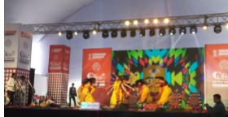
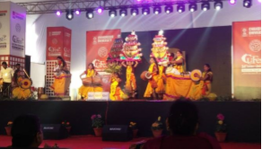

SRI PADMAVATI MAHILA VISVAVIDYALAYAM
(WOMEN'S UNIVERSITY)
Tirupati, Andhra Pradesh - India
Govt. State Level University, Recognized by UGC (Under the act of 1956)

ABOUT SPMVV
ABOUT SOET
COURSES OFFERED
GALARY
CONTACT US
STUDENTS ACHIEVEMENTS
- Cultural Achievements 2019
- TALENTS DAY
- VIRINCHI-2019
34th National Youth Festival:
On Extraordinary achievement of SRI PADMAVATI MAHILA VISVAVIDYALAYAM
a team of 30 participants among which M.Sai Deepthi, M.Yuktha, T. Naga Tanuja from School of Engineering and Technology who secured 2nd prize in Cultural Event .
Participated in the 34th Inter University National Youth Festival organised at Chandigarh University,
Gharvan(Mohali) from 01-02-2019 to 05-02-2019.
 
National Integration Cultural Fest:
On invitation of Kerala State Government Our SRI PADMAVATI MAHILA VISVAVIDYALAYAM
cultural Fork dance team performed and represented our University, won 1st prize in National Integration Cultural Fest at Trivandrum.
Organised by Kerala State Council for child welfare on November 13th 2018.